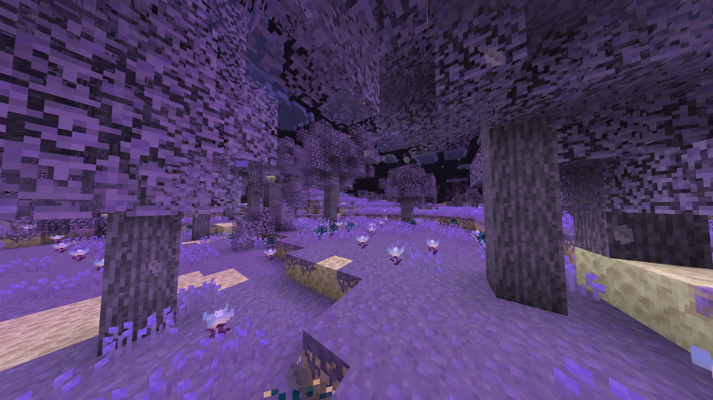
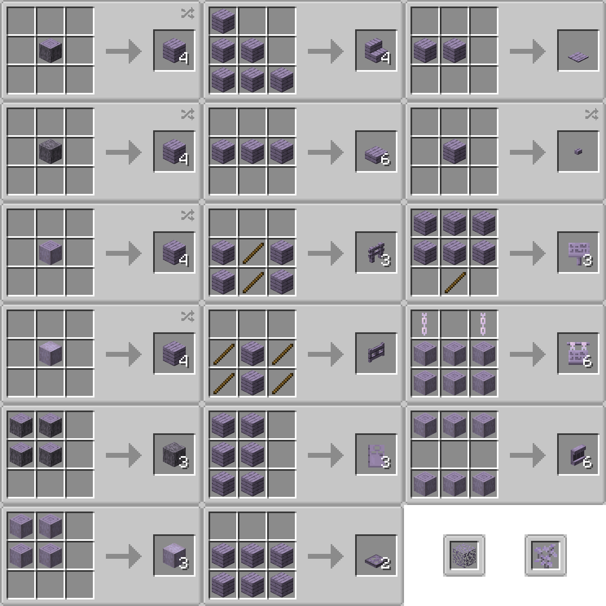
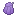
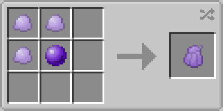
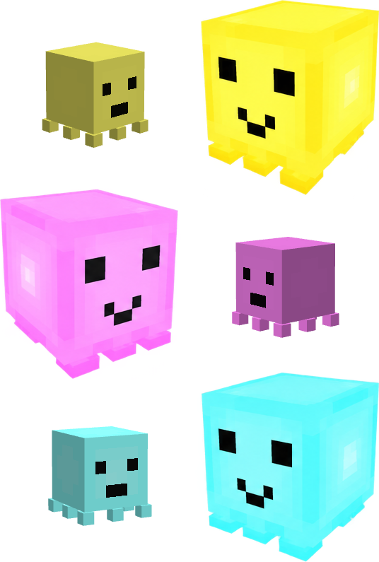
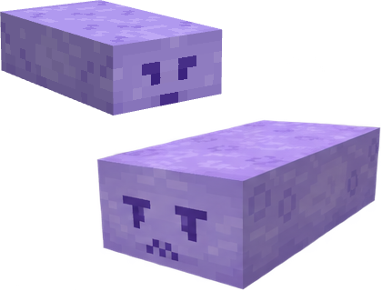
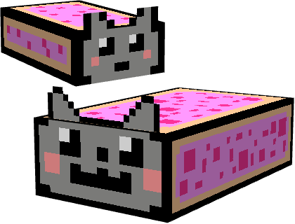
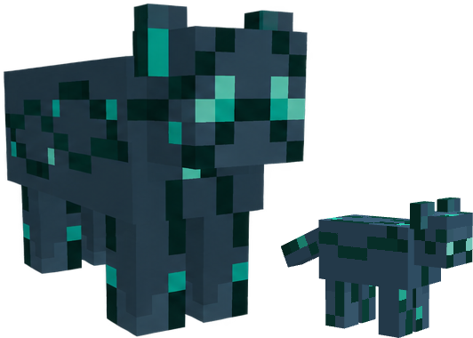
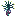

GILE DOCUMENTATION
Biomes & Entities
Explore the End Leftovers, Ghostly Thickets and Moon Deserts introduced by the mod.
Ghostly Thickets
A dense, eerie biome featuring unique atmospheric effects, distinct vegetation, and specialized wood.

- Vegetation: Features the complete Ghostly Wood set (logs, planks, leaves, doors, etc.) and native plants: End Grass Block, End Grass, Tall End Grass, Moon Flowers, Gloomy Flowers.
- Atmosphere: Custom clouds and star features are exclusive to this biome. There are also Ghostly Bubbles particles flying in its atmosphere.
- Fauna: Hovering Ghosts, Luminous, Gloomy Lynx & Endermen.
Ghostly Wood
Its unique Ghostly wood have its proper wood type, for every vanilla recipe as expected. Except boat, because there is no water in the End.


Jelly, dropped from Ghostly Leaves can be eaten restoring ??? HUNGERIMAGE. Alternatively, with Void Slime, it can be used to craft the Jam, that restores ??? HUNGERIMAGE.


Luminous
Ghost · Peaceful · The End 14 HP
14 HP
Spawns in pretty big groups only in the Ghostly Thickets biome.
Idles everywhere with no goal creating the ambience af the biome. Very light, so gravity is very weak against them.
Can be bred using star fragments. It's outside layer imitates glowing in the darkness, does not creates shadows.
 1-5
1-5


Hovering Ghost
Ghost · Peaceful · Overworld / The End ×15
30 HP
Spawns in tiny groups only in the Ghostly Thickets biome.
Idles everywhere with no goal. Wanders everywhere between ghostly trees and end grass.
Can be tamed and bred using jelly, that drops from ghostly leaves. When tamed and clicked on with a saddled, can be ridden by one or two players. Saddle can be taken off using shears. Flies in the direction its front holding a jelly on a stick rider is looking. If named "Nyan Cat", changes texture & on riding makes a rainbow trail and a plays legendary music.
2-7

Gloomy Lynx
Ghost · Hostile · The End
24 HP
Spawns in tiny groups only in the Ghostly Thickets biome.
Hunts players and every peaceful ghost it sees. Can team up with its relatives.
Can be bred using gloomy flowers. However still attacks player.
2-6

0-1